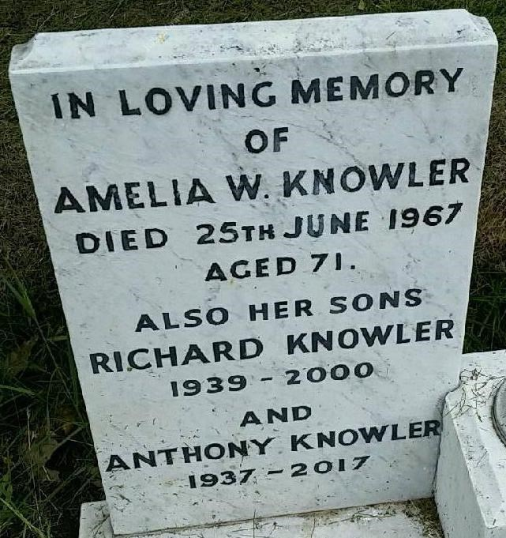
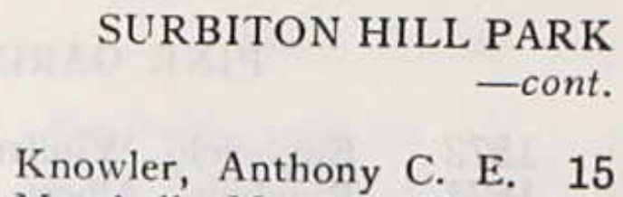
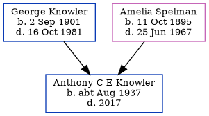

Anthony C E Knowler cAug 1937 - 2017
[ Home ] | [ Calendar ] | [ Surnames Index ] | [ Family History ]The child of George Knowler (a farm horseman) and Amelia Spelman, Anthony Knowler, the second cousin once-removed on the mother's side of <a href="I1.html">Nigel Horne</a>, was born in Thanet, Kent, England <i>c.</i> Aug 1937<span class="citation">1,2</span>. About 1965, he lived at 15 Surbiton Hill Park, Surbiton, London, England<span class="citation">4</span>. <p>He died in 2017<span class="citation">2</span> and was buried on Hamilton Road Cemetery, 45 Hamilton Road, Deal, Kent, England <i>c.</i> 2017<span class="citation">3</span>.
Parents
- George Thomas was born on Sep 2, 1901
- Amelia Winifred was born on Oct 11, 1895
Citations
- England & Wales births 1837-2006 - Findmypast
- England Billion Graves cemetery index - Findmypast
- <a href="https://billiongraves.com/grave/Anthony-Knowler/27756852">https://billiongraves.com/grave/Anthony-Knowler/27756852</a>
- London, England, Electoral Registers, 1832-1965 Ancestry.com Operations, Inc.
Media
Anthony Knowler - headstone

1965 Electoral Register

England Billion Graves cemetery index - US/BMD/BILLION/5/000027756850
England & Wales births 1837-2006 - BMD/B/1937/3/AZ/000684/065
England Billion Graves cemetery index - US/BMD/BILLION/5/000027756852
Family Tree
Generated by Ged2Site. Last updated on Jul 20, 2025